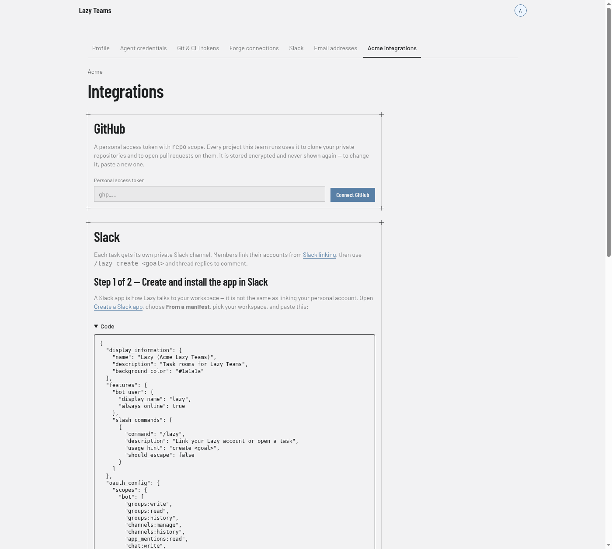
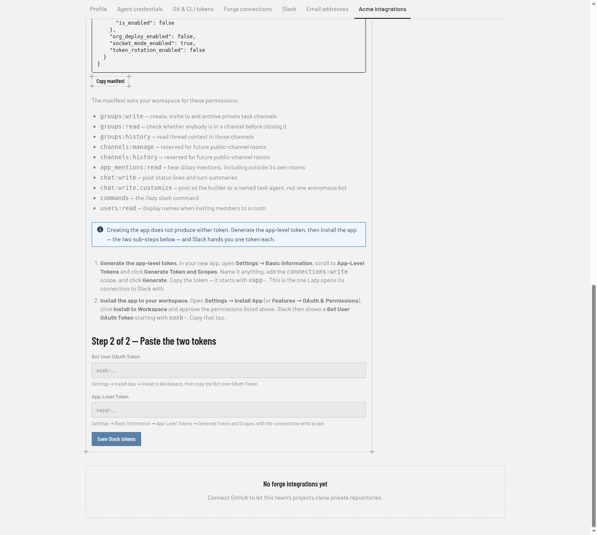
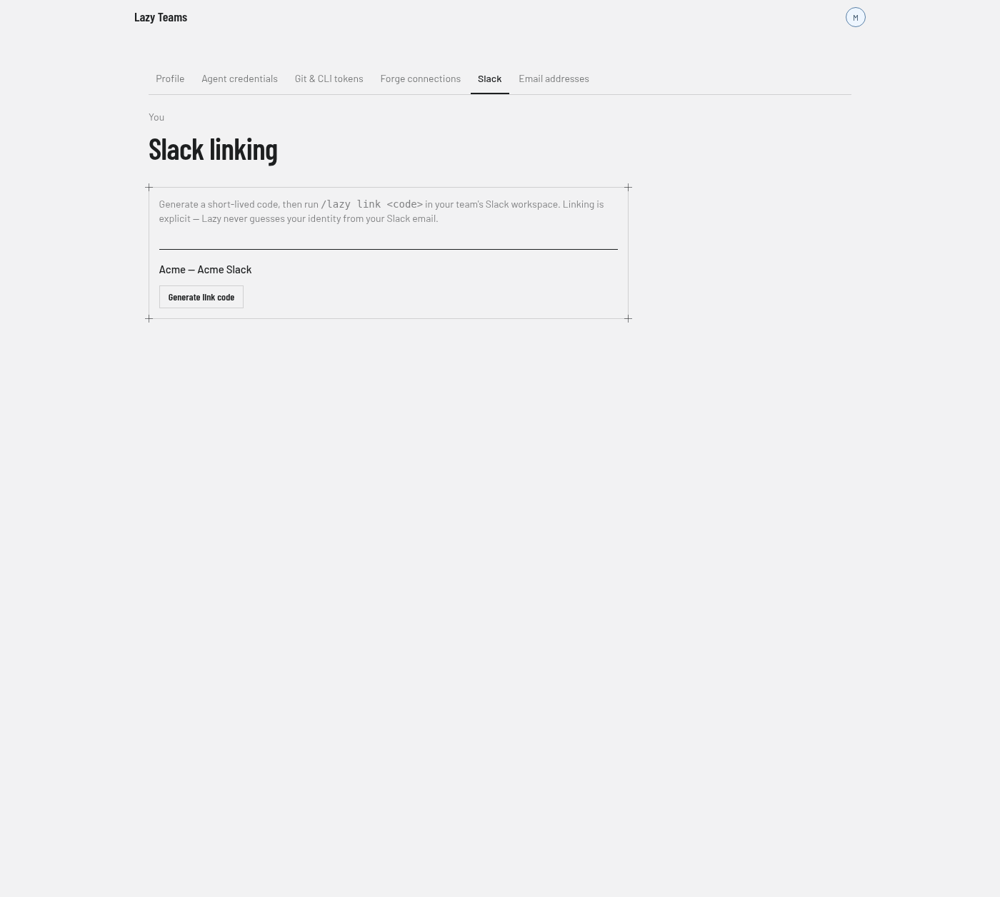

Lazy Teams Slack rooms
Lazy Teams can connect a Slack workspace so a piece of work gets its own private channel, status and turn summaries are posted there (one paragraph per message), and thread replies become task comments or unblock feedback. Subtasks stay in that same channel, each in a thread of its own, so one piece of work is one place to look. A project can have a channel of its own too, and work you start there belongs to that project.
Operator setup
Your install does not need a public address. Lazy opens the connection to
Slack and holds it open, so Slack never dials this app. An install on
localhost, on a laptop, or behind a firewall with no inbound ports is a
supported install: there is no Events URL to publish, no tunnel to run, and no
signing secret to keep in step.
Setup is two steps on the Integrations page (avatar menu → Account settings → your team's integrations tab).
Create and install the app in Slack. The page shows a manifest for this install, with a Copy manifest button beside it. Copy it, go to api.slack.com/apps, choose Create New App → From a manifest, pick your workspace and paste it. Slack creates the app with the bot scopes, the
/lazyslash command, the event subscriptions and Socket Mode already switched on — nothing to transcribe by hand.
The manifest asks for these bot scopes, and the page lists them beside it:
groups:write— create, invite to and archive private task channelsgroups:read— check whether anybody is in a channel before closing itgroups:history— read thread context in those channelschannels:manage,channels:history— public-channel roomsapp_mentions:read— hear @lazy mentions, including outside its own roomschat:write— post status lines and turn summariescommands— the/lazyslash commandusers:read— display names when inviting members to a room
Creating the app does not produce either token. Slack makes you do two more things in the app you just created, and each one hands you one token:
- Generate the app-level token. Open Settings → Basic Information,
scroll to App-Level Tokens and click Generate Token and Scopes.
Name it anything, add the
connections:writescope, and click Generate. Copy the token — it starts withxapp-. - Install the app to your workspace. Open Settings → Install App
(or Features → OAuth & Permissions), click Install to Workspace
and approve the permissions. Slack then shows the Bot User OAuth
Token, starting with
xoxb-. Copy that too.
Paste the two tokens back on the Integrations page:
- Bot User OAuth Token (
xoxb-…) — Lazy posts to Slack with it. - App-Level Token (
xapp-…) — Lazy opens the Socket Mode connection with it, and everything you type in Slack arrives over that connection.

Save them together. Lazy confirms the workspace name from the tokens themselves. Both are stored encrypted and shown afterwards as Configured — paste to replace; a save that Slack refuses keeps what you typed so you can correct one value rather than paste both again.
- Bot User OAuth Token (
Then choose the project Slack-created tasks land in, and use Test connection to confirm both tokens: it authenticates the bot token and opens a Socket Mode connection with the app-level token, so an app with Socket Mode switched off fails here rather than silently receiving nothing.
Project rooms
The default project is where work started outside any Lazy channel lands. Once you have more than one project, give the others a channel of their own: on the Integrations page, Project rooms lists every project in the team with a Create room button beside the ones that do not have a channel yet.
A project's channel is named lazy-project_<project>, so it sorts next to the
task channels in the sidebar and still reads at a glance as the project rather
than a task. Once a project has one, its name on the Integrations page and a
Slack room button on the project's own page both open the channel in Slack.
Creating one is safe to repeat. Asking twice shows you the channel that already exists instead of making a second one, and adds you to it if you were not in it — a room is a private channel, so it stays invisible to anyone nobody invited. If a channel with that exact name is already in your workspace and is not standing for anything else, Lazy uses that channel rather than creating one beside it, so you can make the channel yourself first if you prefer.
If the room cannot be made, the Integrations page says so and what to do about it. The two common answers:
- Lazy is missing a permission in Slack. Reinstall the app from the manifest on that page and paste the new bot token — the same remedy the permissions warning names.
- The name is taken by a channel Lazy cannot see. Private channels are invisible to Lazy until it is invited, so it cannot tell you what is in there. Invite Lazy to that channel and press Create room again to use it, or rename or archive it if it is not the channel you meant.
Anything typed in a project's channel belongs to that project. Giving a project a channel also puts its work on Slack: until then Lazy only followed tasks in the default project, and now each task in that project gets its own channel and its own updates, exactly as the default project's tasks always did.
What must be running
Saved tokens are not a working Slack. Lazy has to be running and holding its
connection open for /lazy and thread replies to reach it — a workspace whose
tokens are perfect still answers "the app did not respond" if nothing is
listening on this end.
Lazy holds that connection from its own background work, and starting the app starts that work: the standard way of running Lazy Teams — the deployment bundle, or the app's own start command — runs everything it needs in one go. There is nothing extra to start. If your deployment was set up to run background work as a separate process, that process must be up too.
The Connection status line on the Integrations page is the answer either way. It reads Listening to Slack while a connection is open, with when it was last established, and Not listening to Slack when there is none — read fresh every time you load the page, so it cannot disagree with what Slack is telling people right now. If it says Lazy is not listening while your tokens are saved, the usual cause is that this install is not running its background work; if it is, use Test connection, because Slack may have revoked one of the two tokens.
If you change the app's scopes later, reinstall the app in Slack and paste the new bot token. The Integrations page warns when the installed app is missing a permission the current setup needs (for example, checking who is in a channel) and tells you to reinstall — it does not leave a fully configured-looking page while background cleanups fail quietly.
More than one copy of Lazy in one Slack workspace
Two copies of Lazy — say one on your laptop and one on a server — can share a Slack workspace, but each copy needs its own Slack app. Give both copies the same app and Slack hands each message to only one of them, chosen at random and with no error anywhere: half of what you type reaches a copy that knows nothing about it, and the other half works. It looks like Lazy ignoring people.
To add a second copy, create a second Slack app from that copy's manifest, and
change one thing before you paste it: the slash command name, from lazy to
something you can tell apart, such as lazy-dev. Slack does not keep slash
commands apart by app — two apps claiming /lazy in one workspace means the one
installed most recently silently takes it, whichever copy you meant. Everything
else in the manifest can stay as it is.
Lazy watches for the mistake: if it sees another copy connected with the same Slack app, the Integrations page says so and tells you what to do about it.
Channel names are shared even when the copies are not. Slack keeps one list
of channel names for the whole workspace, and it never gives a name back — an
archived channel still holds its own. So if the other copy already made
lazy-fix-checkout, this copy cannot use that name and cannot see inside the
channel either. It makes lazy-fix-checkout-2 instead and carries on; the
number is the only difference, and each copy's channels stay its own.
Adding the app-level token
If the Integrations page asks for an app-level token: in the same Slack app, turn
Socket Mode on, then generate one under Settings → Basic Information →
App-Level Tokens → Generate Token and Scopes with the connections:write
scope, and paste it.
Members
Open Account settings → Slack from the avatar menu and generate a link code.

In Slack:
/lazy link <code>.Create work with
/lazy create <goal>. Lazy creates a private channel namedlazy-<task-code>and adds you to it — look for that channel in your Slack sidebar. Lazy's reply always names the project the task landed in and links its channel, so you can see where it went without going looking.Reply in a thread under a task-room message to comment or send feedback when the task is waiting for review. If your Lazy account is not linked yet, Slack replies in the thread with instructions instead of delivering the message.
Where a task lands depends on where you type. /lazy create in a project's
channel creates the task in that project. In a task's own channel it creates a
subtask of that task — work that builds on it, rather than a second, unrelated
task. Anywhere else — a general channel, a DM — it goes to the default project.
All three say so in the reply.
One channel per piece of work, threads for the rest
A channel is made for a piece of work you started, and everything that work breaks itself into stays inside it:
- A task with nothing above it gets a channel — the one you asked for, or a task Lazy started that has somebody to put in the channel with it.
- A subtask gets a thread in that channel instead, opened by a single
Subtask
<code>— started message. Its status lines and turn summaries are replies under it, so the channel reads as a list of the parts the work broke into rather than an interleaved stream. - Anything deeper joins the nearest thread above it, with its own task code in front of each line. Work can nest as far as it likes; Slack stays two levels deep, which is as deep as Slack goes.
- Reply where the work is. A reply in a subtask's thread reaches that subtask — it comments on it, or sends it feedback when it is waiting for review — not the task whose channel you are in.
When a task ends, its channel is archived. If the task is reopened or started again, Lazy brings that same channel back rather than making a second one, so its history is where you left it.
Only one channel is made per piece of work, whoever asks first; a simultaneous request joins it.
A task Lazy started by itself, with nobody it can add to a channel, gets no channel: a private channel with only Lazy in it cannot be found, opened or searched by anyone, so it is worse than none at all. Its work is still there in the web UI, and starting the task from Slack (or giving its project a channel) is what puts it on Slack.
Unlinked users cannot create tasks or deliver thread replies until they complete step 1–2.
When Slack goes quiet
Lazy holds one connection to Slack and replaces it when Slack asks it to refresh, when the network drops, or on its own schedule — each connection starts its successor as it finishes, so the handover is a moment rather than a wait. Anything Slack could not deliver in that moment it retries, so messages and mentions arrive late rather than not at all. A slash command is the exception: Slack does not retry those, so one typed into a handover gets Slack's own "couldn't reach the app" — retype it.
If nothing from Slack arrives at all, look at Connection status on the Integrations page first: it says whether Lazy is holding a connection open at this moment, which "Test connection" does not — that checks the two tokens. Not listening usually means this install is not running its background work (see What must be running); listening, with Slack still quiet, is a tokens question, and Test connection names which of the two is the problem.